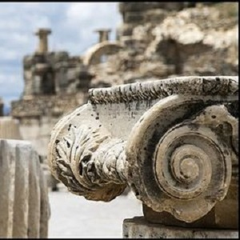
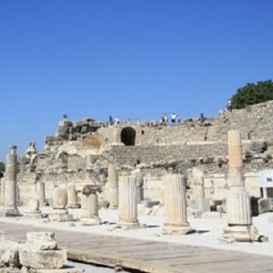
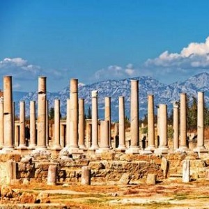
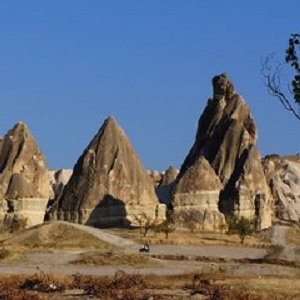
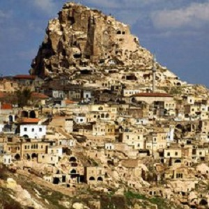
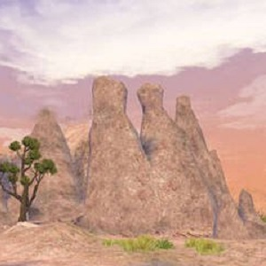
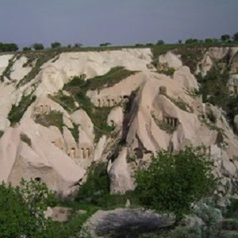

morly旅游网
土耳其是一个横跨欧亚大陆的伊斯兰教国家被称为"文明的摇篮"。土耳其成功进入全世界十大旅游国家行列。穆斯塔法·凯末尔·阿塔土克于1923年10月29日建立了土耳其共和国。历史上的土耳其曾经是罗马帝国、拜占庭帝国、奥斯曼帝国的中心有着6500年悠久历史和前后十三个不同文明的历史遗产加上三面环海的地势和内陆复杂的地理环境使其拥有了极为丰富的旅游资源。0土耳其同时也是一个现代化国家有着一流的旅游服务设施。这里有热情好客的人民灿烂的文化迷人的景色和神秘的传说。当你来到土耳其西、南海岸时举目所见尽是散布着古希腊、罗马文明甚至基督教文明的遗迹值得探访的城市实在不少。其中伊斯坦布尔、安卡拉、伊兹密尔是土耳其第一、二、三大城市。00旅游业近年来土耳其已成为欧洲的主要观光地。夏季、冬季疗养地的开发在急速地进展从世界各地来探求土耳其历史、文化、美丽自然的人们每年都在增加。从地中海的海水浴到乌鲁塔山的滑雪。土耳其人拥有可以提供给任何游客的各式各样的东西。
阿尔忒弥斯神庙
阿尔忒弥斯神庙是希腊神话阿尔忒弥斯女神的神庙（《圣经》翻作亚底米，她是主司狩猎与大自然、生育与新生儿的女神），位列古代世界七大奇迹之一，长425尺，宽230尺，有126根高60尺大理石柱。据称建筑时间前后长达120年（相比之下，大希律王建耶路撒冷圣殿也只用了46年）。公元前356年7月21日，神庙被黑若斯达特斯焚毁。该神庙至今只剩下一根柱子。这座神殿遗址位于今天土耳其的爱奥尼亚海滨，《圣经》里把这个地方称为以弗所（Ephesus），而现在它被称为或者翻译为艾菲索斯。
 毛瑟陆斯陵墓
相对于阿台缪斯神庙遗址，毛瑟陆斯陵墓遗址保存的依然完好，这座经受住岁月考验的陵墓，直到现在仍然岿然不动，保持着它曾经的壮伟，从中我们可以感受到他那无与伦比巧夺天工的建筑技巧，和无法超越的雕像技术，感受到土耳其人们那宏大的艺术境界。
卡帕多奇亚
卡帕多奇亚是土耳其的一处著名景点，以奇石成林而吸引游客。 远古时代，这里火山喷发出来的熔岩构成了火山岩高原，经长期风化侵蚀，形成了独特的地形地貌，千姿百态的石头，稀奇古怪的造型，有点与云南的石林及新疆戈壁的魔鬼城相似，但是要广袤得多，面积竟达数百平方公里。据说，美国的科幻大片《星球大战》曾在此拍摄外景。 从拍摄的角度看，令你频频举起相机的，除了仙女峰，石骆驼外，还有被誉为“国王后花园”的景区，那里一根根烟囱状的石山石峰，形成了一大片怪石群，称为“精灵烟囱”。
 安纳托利亚高原
安纳托利亚高原(Anatolia Plateau)，又名土耳其高原，位于亚洲西部小亚细亚半岛，在土耳其境内。北临黑海、南临地中海、东隔内托罗斯山与亚美尼亚高原相邻，西至土耳其西部地区。面积约50万平方千米。高原三面环山，一面敞开，地势自东向西逐渐降低，海拔800~1200米！
 内容整理至网络，如有侵权，请联系我们！1255394075@qq.com